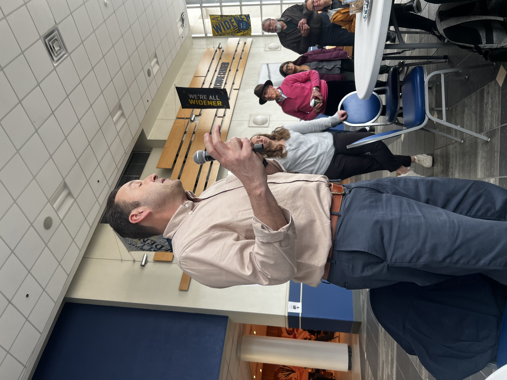
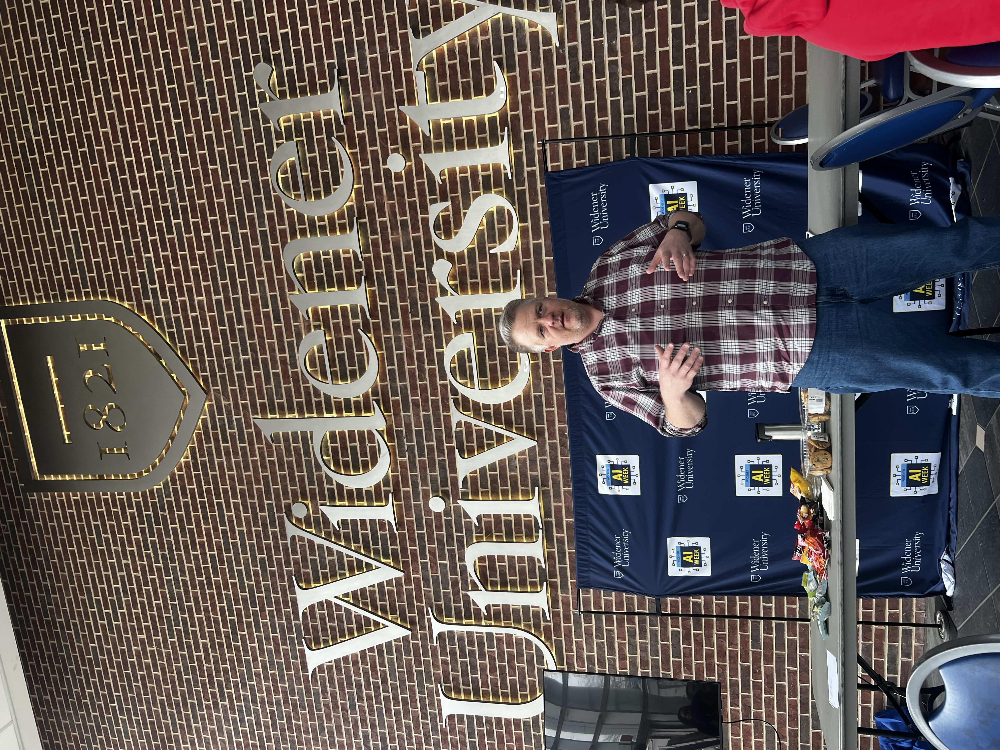

AI for Productivity closed AI Week with an open-format peer-learning session in the University Center Atrium. Faculty and students shared real AI workflows, time-saving tools, and honest lessons learned in short 4–6 minute mini-shares. No expertise required to attend; no selection process for presenters—all who submitted were invited to share.
The session was emceed by Tom Wilk, Chair of the LEAD-AI Council. Cookies, candy, and snacks were provided.
The event's accessible, "show what you've built" format demonstrated that AI adoption at Widener is already broad and grassroots—happening across classrooms, offices, and research spaces before any formal policy has been established.
The session attracted students, faculty, senior administrators, and trustees—a cross-section of the university community that reflected institution-wide interest in practical AI adoption.

Mini-shares spanned four broad categories of practical AI use across teaching, research, and operations.
Presenters shared AI-assisted approaches to capturing meeting notes and action items, performing tasks in Excel, and editing photos in Adobe products. Several highlighted NotebookLM as a versatile tool for generating briefing documents, podcast episodes, and slide decks from source materials—including one share on how Widener uses it to produce a podcast briefing for the Board of Trustees before each board meeting.
More sophisticated workflows where AI acts as an agent rather than a tool. One presenter demonstrated using AI agents to autonomously collect and organize course materials from across the web—a workflow that compresses hours of prep into minutes and keeps course content current.
Small custom-built AI tools—rubric generators, feedback assistants, dashboards, and Canvas-ready content—created to solve specific course or operational workflow needs.
Honest shares about what didn't work, what surprised presenters, and the verification habits developed to keep AI outputs accurate, fair, and appropriate for their contexts. These were among the most highly valued by attendees.
Faculty shared workflows for using AI to build out a full course narrative and generate supporting content—readings, discussion prompts, case studies—aligned to learning objectives. Students contributed too, sharing practical study hacks: using AI to generate practice questions, explain difficult concepts, and create personalized review materials.
AI for Productivity made visible something that is easy to miss: AI adoption at Widener is not waiting for top-down policy direction. It is already happening, organically, across teaching, research, and operations. The mini-share format gave the campus a chance to see this in action—and to learn from each other's practical experience.
One trustee described a project at his engineering firm that used AI to read and organize information from 40,000 handwritten note cards—some dating to the late 1800s—documenting water line infrastructure across Philadelphia. That data, now digitized and structured, is being used as part of a city-wide initiative to identify and remediate lead water lines. It was a reminder that AI's most consequential applications may not be in a classroom or an office, but in the accumulated, forgotten records of the physical world.